감정평가사-1차-2교시 (2018-03-03 기출문제)
1과목: 감정평가관계법규
1. 국토의 계획 및 이용에 관한 법령상 도시ㆍ군기본계획에 관한 설명으로 옳은 것은?
- 시장 또는 군수는 도시ㆍ군기본계획의 수립을 위한 공청회 개최와 관련한 사항을 일간신문에 공청회 개최예정일 7일 전까지 2회 이상 공고하여야 한다.
- 도시ㆍ군기본계획에는 기후변화 대응 및 에너지절약에 관한 사항에 대한 정책방향이 포함되어야 한다.
- 시장 또는 군수는 3년마다 관할 구역의 도시ㆍ군기본계획에 대하여 그 타당성 여부를 전반적으로 재검토하여 정비하여야 한다.
- 시장 또는 군수가 도시ㆍ군기본계획을 변경하려면 지방의회의 승인을 받아야 한다.
- 시장 또는 군수는 대통령령이 정하는 바에 따라 도시ㆍ군기본계획의 수립기준을 정한다.
(정답률: 알수없음)

2. 국토의 계획 및 이용에 관한 법령상 도시ㆍ군관리계획에 관한 설명으로 옳지 않은 것은?
- 도시ㆍ군관리계획 결정의 효력은 지형도면을 고시한 날의 다음날부터 발생한다.
- 주민은 기반시설의 설치ㆍ정비 또는 개량에 관한 사항에 대하여 도시ㆍ군관리계획의 입안을 제안할 수 있다.
- 도시ㆍ군관리계획의 입안 시 주민의 의견을 청취하여야 하는 경우 그에 필요한 사항은 대통령령이 정하는 기준에 따라 해당 지방자치단체의 조례로 정한다.
- 국가계획과 관련되어 국토교통부장관이 입안한 도시ㆍ군관리계획은 국토교통부장관이 결정한다.
- 도시ㆍ군관리계획을 조속히 입안하여야 할 필요가 있다고 인정되면 광역도시계획이나 도시ㆍ군기본계획을 수립할 때에 도시ㆍ군관리계획을 함께 입안할 수 있다.
(정답률: 알수없음)
3. 국토의 계획 및 이용에 관한 법령상 기반시설 중 환경기초시설에 해당하지 않는 것은?
- 하수도
- 폐차장
- 유류저장설비
- 폐기물처리시설
- 수질오염방지시설
(정답률: 알수없음)
4. 국토의 계획 및 이용에 관한 법령상 시설보호지구에 해당하지 않는 것은?
- 학교시설보호지구
- 항만시설보호지구
- 군사시설보호지구
- 공용시설보호지구
- 공항시설보호지구
(정답률: 알수없음)
5. 국토의 계획 및 이용에 관한 법령상 ( )에 들어갈 용도지역을 옳게 연결한 것은?
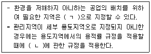
- ㄱ: 일반공업지역, ㄴ: 보전관리지역
- ㄱ: 일반공업지역, ㄴ: 계획관리지역
- ㄱ: 일반공업지역, ㄴ: 생산관리지역
- ㄱ: 준공업지역, ㄴ: 보전관리지역
- ㄱ: 준공업지역, ㄴ: 계획관리지역
(정답률: 알수없음)
6. 국토의 계획 및 이용에 관한 법령상 공동구에 관한 설명으로 옳은 것은?
- 「도시개발법」에 따른 도시개발구역이 100만 m2를 초과하는 경우에는 해당구역에서 개발사업을 시행하는 자는 공동구를 설치하여야 한다.
- 공동구가 설치된 경우에 전선로, 통신선로 및 수도관은 공동구에 수용하지 아니할 수 있다.
- 공동구 설치에 필요한 비용은「국토의 계획 및 이용에 관한 법률」이나 다른 법률에 특별한 규정이 있는 경우를 제외하고는 사업시행자가 단독으로 부담한다.
- 공동구의 관리에 소요되는 비용은 그 공동구를 점용하는 자가 함께 부담하되, 부담비율은 점용면적을 고려하여 공동구관리자가 정한다.
- 공동구관리자는 3년마다 해당 공동구의 안전 및 유지관리계획을 수립ㆍ시행하여야 한다.
(정답률: 알수없음)
7. 국토의 계획 및 이용에 관한 법령상 매수의무자가 도시ㆍ군계획시설 부지의 매수 결정을 알린 날부터 2년이 지날 때까지 해당 토지를 매수하지 아니하는 경우 매수청구를 한 토지소유자가 개발행위허가를 받아 건축할 수 있는 것은? (단, 조례는 고려하지 않음)
- 5층의 치과의원
- 4층의 다가구주택
- 3층의 동물병원
- 2층의 노래연습장
- 3층의 생활숙박시설
(정답률: 알수없음)
8. 국토의 계획 및 이용에 관한 법령상 지구단위계획의 수립 시 고려사항으로 명시하고 있지 않은 것은?
- 지역공동체의 활성화
- 해당 용도지역의 특성
- 안전하고 지속가능한 생활권의 조성
- 도시의 자연환경 및 경관보호와 도시민에게 건전한 여가ㆍ휴식공간의 제공
- 해당 지역 및 인근 지역의 토지 이용을 고려한 토지이용계획과 건축계획의 조화
(정답률: 알수없음)
9. 국토의 계획 및 이용에 관한 법령상 중앙도시계획위원회에 관한 설명으로 옳지 않은 것은?
- 국토교통부장관은 중앙도시계획위원회의 회의를 소집할 수 있다.
- 중앙도시계획위원회는 도시ㆍ군계획에 관한 조사ㆍ연구 업무를 수행할 수 있다.
- 중앙도시계획위원회의 회의는 재적위원 과반수의 출석으로 개의(開議)하고, 출석위원 과반수의 찬성으로 의결한다.
- 중앙도시계획위원회의 위원장과 부위원장이 모두 부득이한 사유로 그 직무를 수행하지 못할 때에는 위원장이 미리 지명한 위원이 그 직무를 대행한다.
- 중앙도시계획위원회의 회의록은 심의 종결 후 3개월이 지난 후에는 공개요청이 있는 경우 이를 공개하여야 한다.
(정답률: 알수없음)
10. 국토의 계획 및 이용에 관한 법령상 개발행위의 허가에 관한 설명으로 옳지 않은 것은? (단, 조례는 고려하지 않음)
- 허가권자는 개발행위허가의 신청 내용이 도시ㆍ군계획사업의 시행에 지장이 있는 경우에는 개발행위허가를 하여서는 아니된다.
- 개발행위허가를 받은 부지면적을 3퍼센트 확대하는 경우에는 별도의 변경허가를 받지 않아도 된다.
- 성장관리방안을 수립한 지역에서 개발행위허가를 하는 경우에는 중앙도시계획위원회와 지방도시계획위원회의 심의를 거치지 아니한다.
- 특별시장, 광역시장, 특별자치시장, 특별자치도지사, 시장 또는 군수는 개발행위 허가내용과 다르게 개발행위를 하는 자에게 그 토지의 원상회복을 명할 수 있다.
- 지구단위계획구역으로 지정된 지역에 대해서는 중앙도시계획위원회나 지방도시계획위원회의 심의를 거치지 아니하고 한 차례만 2년 이내의 기간 동안 개발행위허가의 제한을 연장할 수 있다.
(정답률: 알수없음)
11. 국토의 계획 및 이용에 관한 법령상 용도지역별 건폐율의 최대한도가 옳은 것을 모두 고른 것은? (단, 조례와 건축법령상의 예외는 고려하지 않음)
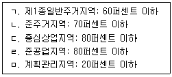
- ㄱ, ㄴ
- ㄱ, ㄹ
- ㄱ, ㄴ, ㄹ
- ㄴ, ㄷ, ㅁ
- ㄷ, ㄹ, ㅁ
(정답률: 알수없음)
12. 국토의 계획 및 이용에 관한 법령상 시범도시에 관한 설명으로 옳은 것은?
- 국토교통부장관과 시ㆍ도지사는 시장ㆍ군수ㆍ구청장의 신청을 받아 시범도시를 지정할 수 있다.
- 시범도시사업의 시행을 위하여 필요한 경우에는 시범도시사업의 예산집행에 관한 사항을 도시ㆍ군계획조례로 정할 수 있다.
- 시범도시를 공모할 경우 이에 응모할 수 있는 자는 특별시장ㆍ광역시장ㆍ특별자치시장ㆍ특별자치도지사ㆍ시장ㆍ군수ㆍ구청장 또는 주민자치회이다.
- 국토교통부장관은 시범도시를 지정하려면 설문조사ㆍ열람 등을 통하여 주민의 의견을 들은 후 관계 지방자치단체장의 의견을 들어야 한다.
- 국토교통부장관은 시범도시사업계획의 수립에 소요되는 비용의 전부에 대하여 보조 또는 융자할 수 있다.
(정답률: 알수없음)
13. 국토의 계획 및 이용에 관한 법령상 도시ㆍ군계획시설사업에 관한 설명으로 옳지 않은 것은?
- 도시ㆍ군계획시설사업의 시행자는 사업시행대상지역 또는 대상시설을 둘 이상으로 분할하여 도시ㆍ군계획시설사업을 시행할 수 있다.
- 한국토지주택공사가 도시ㆍ군계획시설사업시행자로 지정을 받으려면 토지소유자 총수의 2분의 1 이상에 해당하는 자의 동의를 얻어야 한다.
- 도지사는 광역도시계획과 관련되거나 특히 필요하다고 인정되는 경우에는 관계시장 또는 군수의 의견을 들어 직접 도시ㆍ군계획시설사업을 시행할 수 있다.
- 도시ㆍ군계획시설에 대한 단계별 집행계획은 제1단계 집행계획과 제2단계 집행계획으로 구분하여 수립하되, 3년 이내에 시행하는 도시ㆍ군계획시설사업은 제1단계 집행계획에 포함되도록 하여야 한다.
- 도시ㆍ군계획시설사업의 시행자로 지정받은「지방공기업법」에 의한 지방공사는 기반시설의 설치가 필요한 경우에 그 이행을 담보하기 위한 이행보증금을 예치하지 않아도 된다.
(정답률: 알수없음)
14. 감정평가 및 감정평가사에 관한 법령상 감정평가사의 업무에 해당하는 것을 모두 고른 것은?
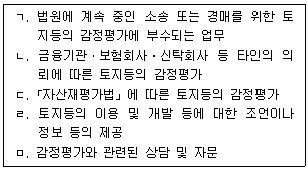
- ㄹ, ㅁ
- ㄱ, ㄴ, ㄷ
- ㄱ, ㄴ, ㄷ, ㅁ
- ㄴ, ㄷ, ㄹ, ㅁ
- ㄱ, ㄴ, ㄷ, ㄹ, ㅁ
(정답률: 알수없음)
15. 감정평가 및 감정평가사에 관한 법령상 감정평가업자(감정평가법인 또는 감정평가사사무소의 소속 감정평가사를 포함한다)의 의무에 관한 설명으로 옳은 것은?
- 자신이 소유한 토지에 대하여 감정평가를 하기 위해서는 국토교통부장관의 허가를 받아야 한다.
- 감정평가업무와 관련하여 필요한 경우에만 국토교통부장관의 허가를 받아 토지의 매매업을 직접 할 수 있다.
- 감정평가업무의 경쟁력 강화를 위해 필요한 경우 감정평가 수주의 대가로 일정한 재산상의 이익을 제공할 수 있다.
- 신의와 성실로써 공정하게 감정평가를 하여야 하며, 고의 또는 중대한 과실로 잘못된 평가를 하여서는 아니된다.
- 공익을 위해 필요한 경우에는 다른 사람에게 자기의 자격증을 대여할 수 있다.
(정답률: 알수없음)
16. 감정평가 및 감정평가사에 관한 법령상 감정평가의 대상에 해당하지 않는 것은?
- 어업권
- 유가증권
- 도로점용허가권한
- 「입목에 관한 법률」에 따른 입목
- 「공장 및 광업재단 저당법」에 따른 공장재단
(정답률: 알수없음)
17. 부동산 가격공시에 관한 법령상 표준지에 관한 사항으로 표준지공시지가의 공시에 포함되어야 하는 것을 모두 고른 것은?
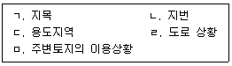
- ㄱ, ㄴ, ㄷ
- ㄱ, ㄹ, ㅁ
- ㄱ, ㄴ, ㄷ, ㄹ
- ㄴ, ㄷ, ㄹ, ㅁ
- ㄱ, ㄴ, ㄷ, ㄹ, ㅁ
(정답률: 알수없음)
18. 부동산 가격공시에 관한 법령상 표준지공시지가의 공시방법에 관한 설명으로 옳은 것은?
- 국토교통부장관은 매년 표준지공시지가를 중앙부동산가격공시위원회의의 심의를 거쳐 공시하여야 한다.
- 표준지공시지가를 공시할 때에는 표준지공시지가의 열람방법을 부동산공시가격 시스템에 게시하여야 한다.
- 표준지공시지가를 공시할 때에는 표준지공시지가에 대한 이의신청의 기간ㆍ절차 및 방법을 부동산공시가격시스템에 게시하여야 한다.
- 국토교통부장관은 표준지공시지가와 표준지공시지가의 열람방법을 표준지 소유자에게 개별 통지하여야 한다.
- 국토교통부장관은 표준지공시지가를 관보에 공고하고, 그 공고사실을 방송ㆍ신문 등을 통하여 알려야 한다.
(정답률: 알수없음)
19. 부동산 가격공시에 관한 법령상 지가의 공시 등에 관한 설명으로 옳지 않은 것은?
- 표준지로 선정되어 개별공시지가를 결정ㆍ공시하지 아니하는 토지의 경우 해당 토지의 표준지공시지가를 개별공시지가로 본다.
- 개별공시지가 조사ㆍ산정의 기준에는 지가형성에 영향을 미치는 토지 특성조사에 관한 사항이 포함되어야 한다.
- 관계공무원등이 표준지가격의 조사ㆍ평가를 위해 택지에 출입하고자 할 때에는 점유자를 알 수 없거나 부득이한 사유가 있는 경우를 제외하고는 출입할 날의 3일 전에 그 점유자에게 일시와 장소를 통지하여야 한다.
- 표준지공시지가의 공시기준일은 1월 1일이며, 일부 지역을 지정하여 해당 지역에 대한 공시기준일을 따로 정할 수는 없다.
- 개별공시지가의 결정ㆍ공시에 소요되는 비용은 대통령령으로 정하는 바에 따라 그 일부를 국고에서 보조할 수 있다.
(정답률: 알수없음)
20. 국유재산법령상 국유재산에 관한 설명으로 옳지 않은 것은?
- 대통령 관저와 국무총리 공관은 공용재산이다.
- 행정재산 외의 모든 국유재산은 일반재산이다.
- 행정재산의 사용 여부는「국가재정법」제6조에 따른 중앙관서의 장의 의견을 들어 기획재정부장관이 결정한다.
- 국가가 보존할 필요가 있다고 국토교통부장관이 결정한 재산은 보존용재산이다.
- 정부기업이 비상근무에 종사하는 직원에게 제공하는 해당 근무지의 구내 또는 이와 인접한 장소에 설치된 주거용 시설은 기업용재산이다.
(정답률: 알수없음)
21. 국유재산법령상 일반재산에 관한 설명으로 옳지 않은 것은?
- 일반재산은 대부 또는 처분할 수 있다.
- 중앙관서의 장은 국가의 활용계획이 없는 건물이 재산가액에 비하여 유지ㆍ보수비용이 과다한 경우 이를 철거할 수 있다.
- 일반재산은 매립사업을 시행하기 위하여 그 사업의 완성을 조건으로 총괄청과 협의하여 매각을 예약할 수 있다.
- 일반재산을 매각하는 경우에는 대통령령으로 정하는 바에 따라 매수자에게 그 재산의 용도와 그 용도에 사용하여야 할 기간을 정하여 매각할 수 있다.
- 총괄청은 일반재산을 보존용재산으로 전환하여 관리할 수 없다.
(정답률: 알수없음)
22. 국유재산법상 행정재산에 관한 설명으로 옳지 않은 것은?
- 행정재산의 사용허가를 철회하려는 경우에는 청문을 하여야 한다.
- 행정재산의 사용허가에 관하여는「국유재산법」에서 정한 것을 제외하고는 「민법」의 규정을 준용한다.
- 행정재산으로 할 목적으로 기부를 받은 재산에 대하여 중앙관서의 장이 기부자에게 사용허가하는 경우 그 사용료를 면제할 수 있다.
- 행정재산의 사용허가를 받은 자가 해당 재산의 보존을 게을리 한 경우 그 허가를 철회할 수 있다.
- 행정재산으로 사용하기로 결정한 날부터 5년이 지난 날까지 해당 재산이 행정재산으로 사용되지 아니한 경우 지체 없이 행정재산의 용도를 폐지하여야 한다.
(정답률: 알수없음)
23. 국유재산법상 국유재산 관리ㆍ처분의 기본원칙으로 명시되어 있는 것은?
- 수익과 손실이 균형을 이룰 것
- 보존가치와 활용가치를 고려할 것
- 투명하고 효율적인 절차를 따를 것
- 지속가능한 미래의 가치와 비용을 고려할 것
- 국유재산이 소재한 지방자치단체의 이익에 부합되도록 할 것
(정답률: 알수없음)
24. 건축법령상 건축 관련 입지와 규모의 사전결정에 관한 설명으로 옳지 않은 것은?
- 건축허가 대상 건축물을 건축하려는 자는 건축허가를 신청하기 전에 허가권자에게 해당 대지에 건축 가능한 건축물의 규모에 대한 사전결정을 신청할 수 있다.
- 사전결정신청자는 건축위원회 심의와「도시교통정비 촉진법」에 따른 교통영향평가서의 검토를 동시에 신청할 수 있다.
- 허가권자는 사전결정이 신청된 건축물의 대지면적이「환경영향평가법」에 따른 소규모 환경영향평가 대상사업인 경우 환경부장관이나 지방환경관서의 장과 소규모 환경영향평가에 관한 협의를 하여야 한다.
- 사전결정신청자가 사전결정 통지를 받은 경우에는「하천법」에 따른 하천점용허가를 받은 것으로 본다.
- 사전결정신청자는 사전결정을 통지받은 날부터 2년 이내에 건축허가를 받아야 하며, 이 기간에 건축허가를 받지 아니하면 사전결정의 효력은 상실된다.
(정답률: 알수없음)
25. 건축법령상 국토교통부장관이 특별건축구역으로 지정할 수 있는 것은?
- 국가가 국제행사를 개최하는 도시의 사업구역
- 「자연공원법」에 따른 자연공원
- 「개발제한구역의 지정 및 관리에 관한 특별조치법」에 따른 개발제한구역
- 「산지관리법」에 따른 보전산지
- 「도로법」에 따른 접도구역
(정답률: 알수없음)
26. 건축법령상 건축허가 전에 건축물 안전영향평가를 받아야 하는 주요 건축물에 해당하지 않는 것은? (단, 하나의 대지 위에 하나의 건축물이 있는 경우를 전제로 함)
- 층수가 70층인 건축물
- 높이가 250미터인 건축물
- 연면적 10만 제곱미터인 20층의 건축물
- 연면적 20만 제곱미터인 30층의 건축물
- 층수가 15층이고 높이가 150미터인 연면적 10만 제곱미터의 건축물
(정답률: 알수없음)
27. 건축법령상 건축물의 용도와 그에 부합하는 시설군의 연결로 옳지 않은 것은?
- 묘지 관련 시설 - 교육 및 복지시설군
- 발전시설 - 전기통신시설군
- 관광휴게시설 - 문화 및 집회시설군
- 숙박시설 - 영업시설군
- 교정 및 군사시설 - 주거업무시설군
(정답률: 알수없음)
28. 공간정보의 구축 및 관리 등에 관한 법령상 지번의 부여 등에 관한 설명으로 옳지 않은 것은?
- 지번은 지적소관청이 지번부여지역별로 차례대로 부여한다.
- 지번은 북서에서 남동으로 순차적으로 부여한다.
- 지번변경 승인신청을 받은 승인권자는 지번변경 사유 등을 심사한 후 그 결과를 지적소관청에 통지하여야 한다.
- 지번은 아라비아숫자로 표기하되, 임야대장 및 임야도에 등록하는 토지의 지번은 숫자 앞에 "산"자를 붙인다.
- 지적소관청이 지적공부에 등록된 지번을 변경하려면 국토교통부장관의 승인을 받아야 한다.
(정답률: 알수없음)
29. 공간정보의 구축 및 관리 등에 관한 법령상 지목의 구분기준과 종류가 옳게 연결된 것은?
- 자연의 유수(流水)가 있거나 있을 것으로 예상되는 토지 - 하천
- 축산업 및 낙농업을 하기 위하여 초지를 조성한 토지 내의 주거용 건축물의 부지 - 목장용지
- 지하에서 용출되는 온수를 일정한 장소로 운송하는 송수관 및 저장시설의 부지 - 광천지
- 자동차 등의 판매 목적으로 설치된 물류장 - 주차장
- 아파트ㆍ공장 등 단일 용도의 일정한 단지 안에 설치된 통로 - 도로
(정답률: 알수없음)
30. 공간정보의 구축 및 관리 등에 관한 법령상 지적공부에 관한 설명으로 옳지 않은 것은?
- 지적공부를 정보처리시스템을 통하여 기록ㆍ저장한 경우 그 지적공부는 지적정보관리체계에 영구히 보존되어야 한다.
- 정보처리시스템을 통하여 기록ㆍ저장된 공유지연명부를 열람하려는 경우에는 특별자치시장, 시장ㆍ군수 또는 구청장이나 읍ㆍ면ㆍ동의 장에게 신청할 수 있다.
- 지방자치단체장이 지적전산자료를 신청하는 경우에는 지적전산자료의 이용에 관하여 미리 관계 중앙행정기관의 심사를 받아야 한다.
- 정보처리시스템을 통하여 기록ㆍ저장된 지적공부 사항 중 소유자에 관한 사항을 복구할 때에는 부동산등기부나 법원의 확정판결에 따라야 한다.
- 시ㆍ군ㆍ구 단위의 지적전산자료를 이용하거나 활용하려는 자는 지적소관청에 지적전산자료를 신청하여야 한다.
(정답률: 알수없음)
31. 공간정보의 구축 및 관리 등에 관한 법령상 공유지연명부에 등록하여야 하는 사항에 해당하지 않는 것은?
- 토지의 소재
- 지번
- 지목
- 소유권 지분
- 소유자의 성명 또는 명칭, 주소 및 주민등록번호
(정답률: 알수없음)
32. 부동산등기법상 등기신청인에 관한 설명으로 옳지 않은 것은?
- 소유권보존등기 또는 소유권보존등기의 말소등기는 등기명의인으로 될 자 또는 등기명의인이 단독으로 신청한다.
- 상속, 법인의 합병, 그 밖에 대법원규칙으로 정하는 포괄승계에 따른 등기는 등기권리자가 단독으로 신청한다.
- 판결에 의한 등기는 승소한 등기권리자 또는 등기의무자가 단독으로 신청한다.
- 신탁재산에 속하는 부동산의 신탁등기는 위탁자가 단독으로 신청한다.
- 등기명의인표시의 변경이나 경정의 등기는 해당 권리의 등기명의인이 단독으로 신청한다.
(정답률: 알수없음)
33. 부동산등기법상 등기부 등에 관한 설명으로 옳지 않은 것은?
- 등기부는 토지등기부와 건물등기부로 구분한다.
- 법원의 명령 또는 촉탁이 있는 경우에는 신청서나 그 밖의 부속서류를 등기소 밖으로 옮길 수 있다.
- 등기관이 등기를 마쳤을 때에는 등기부부본자료를 작성하여야 한다.
- 폐쇄한 등기기록의 열람 및 등기사항증명서의 발급은 관할 등기소가 아닌 등기소에 청구할 수 없다.
- 등기부의 부속서류가 손상ㆍ멸실의 염려가 있을 때에는 대법원장은 그 방지를 위하여 필요한 처분을 명령할 수 있다.
(정답률: 알수없음)
34. 부동산등기법상 등기절차에 관한 설명으로 옳지 않은 것은?
- 대표자나 관리인이 있는 법인 아닌 사단이나 재단에 속하는 부동산의 등기에 관하여는 그 대표자나 관리인을 등기권리자 또는 등기의무자로 한다.
- 등기기록에 기록된 사항이 많아 취급하기에 불편하게 되는 등 합리적 사유로 등기기록을 옮겨 기록할 필요가 있는 경우에 등기관은 현재 효력이 있는 등기만을 새로운 등기기록에 옮겨 기록할 수 있다.
- 채권자는「민법」의 채권자대위권 규정에 따라 채무자를 대위하여 등기를 신청할 수 있다.
- 행정구역이 변경되었을 때에는 등기기록에 기록된 행정구역에 대하여 변경등기가 있는 것으로 본다.
- 등기는 법률에 다른 규정이 없는 한 당사자의 신청 또는 관공서의 촉탁에 따라 한다.
(정답률: 알수없음)
35. 부동산등기법상 건물의 표시에 관한 등기에 대한 설명으로 옳지 않은 것은?
- 등기관이 대지권등기를 하였을 때에는 직권으로 대지권의 목적인 토지의 등기기록에 소유권, 지상권, 전세권 또는 임차권이 대지권이라는 뜻을 기록하여야 한다.
- 건물이 멸실된 경우에는 그 건물 소유권의 등기명의인은 그 사실이 있는 때부터 2개월 이내에 그 등기를 신청하여야 한다.
- 존재하지 아니하는 건물에 대한 등기가 있을 때에는 그 소유권의 등기명의인은 지체 없이 그 건물의 멸실등기를 신청하여야 한다.
- 구분건물로서 그 대지권의 변경이나 소멸이 있는 경우에는 구분건물의 소유권의 등기명의인은 1동의 건물에 속하는 다른 구분건물의 소유권의 등기명의인을 대위하여 그 등기를 신청할 수 있다.
- 1동의 건물에 속하는 구분건물 중 일부만에 관하여 소유권보존등기를 신청하는 경우에는 나머지 구분건물의 표시에 관한 등기를 동시에 신청하여야 한다.
(정답률: 알수없음)
36. 동산ㆍ채권 등의 담보에 관한 법률상 담보등기에 관한 설명으로 옳지 않은 것은?
- 담보등기는 법률에 다른 규정이 없으면 등기권리자와 등기의무자가 공동으로 신청한다.
- 등기관이 등기를 마친 경우 그 등기는 접수한 때부터 효력을 발생한다.
- 「동산ㆍ채권 등의 담보에 관한 법률」에 따른 담보권의 존속기간은 5년을 초과할 수 없으나, 5년을 초과하지 않는 기간으로 이를 갱신할 수 있다.
- 등기관의 결정 또는 처분에 대한 이의신청은 집행정지의 효력이 없다.
- 등기관의 결정 또는 처분에 이의가 있는 자는 새로운 사실이나 새로운 증거방법을 근거로 관할 지방법원에 이의신청을 할 수 있다.
(정답률: 알수없음)
37. 도시 및 주거환경정비법령상 관리처분계획에 포함되어야 하는 사항으로 명시되지 않은 것은?
- 분양설계
- 분양대상자의 주소 및 성명
- 세입자의 주거 및 이주대책
- 기존 건축물의 철거 예정시기
- 세입자별 손실보상을 위한 권리명세 및 그 평가액
(정답률: 알수없음)
38. 도시 및 주거환경정비법령상 가로주택정비사업에 관한 설명으로 옳지 않은 것은?
- 가로주택정비사업은 사업시행자가 가로구역에서 인가받은 관리처분계획에 따라 주택 등을 건설하여 공급하거나 보전 또는 개량하는 방법으로 한다.
- 가로주택정비사업의 사업시행자는 가로구역에 있는 기존 단독주택의 호수와 공동주택의 세대 수를 합한 수 이상의 주택을 공급하여야 한다.
- 특별자치도지사는 가로주택정비사업의 시행을 위하여 도시ㆍ주거환경정비기본계획을 수립하여야 한다.
- 가로주택정비사업은 조합이 시행하거나 조합이 조합원 과반수의 동의를 받아 시장ㆍ군수와 공동으로 시행할 수 있다.
- 가로주택정비사업의 경우에는 조합설립추진위원회를 구성하지 아니한다.
(정답률: 알수없음)
39. 도시 및 주거환경정비법령상 비용부담 등에 관한 설명으로 옳지 않은 것은?
- 정비사업비는「도시 및 주거환경정비법」또는 다른 법령에 특별한 규정이 있는경우를 제외하고는 사업시행자가 부담한다.
- 사업시행자는 토지등소유자로부터 정비사업비용과 정비사업의 시행과정에서 발생한 수입의 차액을 부과금으로 부과ㆍ징수할 수 있다.
- 시장ㆍ군수가 아닌 사업시행자는 부과금 또는 연체료를 체납하는 자가 있는 때에는 시장ㆍ군수에게 그 부과ㆍ징수를 위탁할 수 있다.
- 국가는 시장ㆍ군수가 아닌 사업시행자가 시행하는 정비사업에 소요되는 비용의 일부에 대해 융자를 알선할 수 없다.
- 정비구역안의 국ㆍ공유재산은 정비사업외의 목적으로 매각하거나 양도할 수 없다.
(정답률: 알수없음)
40. 도시 및 주거환경정비법령상 조합설립추진위원회가 수행할 수 있는 업무에 해당하지 않는 것은? (단, 조합설립추진위원회 운영규정은 고려하지 않음)
- 정비사업전문관리업자의 선정
- 조합정관의 변경
- 설계자의 변경
- 개략적인 정비사업 시행계획서의 작성
- 토지등소유자의 동의서 징구
(정답률: 알수없음)
2과목: 회계학
41. 재무보고를 위한 개념체계에서 유용한 재무정보의 질적 특성에 관한 설명으로 옳은 것은?
- 재무정보가 예측가치를 갖기 위해서 그 자체가 예측치 또는 예상치일 필요는 없다.
- 계량화된 정보가 검증가능하기 위해서 단일 점추정치이어야 한다.
- 완벽하게 표현충실성을 위해서는 서술은 완전하고, 검증가능하며, 오류가 없어야 한다.
- 재무정보에 예측가치가 있다면 그 재무정보는 나타내고자 하는 현상을 충실하게 표현한다.
- 재고자산평가손실의 인식은 보수주의 원칙이 적용된 것이며, 보수주의는 표현 충실성의 한 측면으로 포함할 수 있다.
(정답률: 알수없음)
42. 20x1년 말 현재 (주)감평의 외부감사 전 재무상태표 상 재고자산은 ￦1,000,000이다. (주)감평은 실지재고조사법을 사용하여 창고에 있는 상품만을 기말재고로 보고하였다. 회계감사 중 공인회계사는 (주)감평의 기말 재고자산과 관련하여 다음 사항을 알게 되었다.
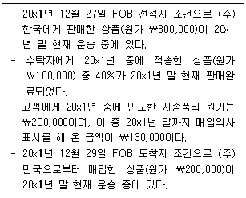
위의 내용을 반영하여 작성된 20x1년 말 재무상태표 상 재고자산은?
- ￦1,010,000
- ￦1,110,000
- ￦1,130,000
- ￦1,330,000
- ￦1,430,000
(정답률: 알수없음)
43. (주)감평은 20x1년 초 기계장치를 ￦100,000에 취득하고 재평가모형을 적용하기로 하였다. 기계장치의 내용연수는 5년, 잔존가치는 ￦0이며 정액법으로 감가상각 한다. 다음은 연도별 기계장치의 공정가치와 회수가능액이다.
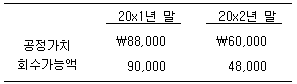
(주)감평은 20x2년 말에 기계장치에 대해서 손상이 발생하였다고 판단하였다. 기계장치와 관련하여 20x2년도 포괄손익계산서 상 당기순이익과 기타포괄이익에 미치는 영향은 각각 얼마인가? (단, 기계장치를 사용함에 따라 재평가잉여금의 일부를 이익잉여금으로 대체하지 않는다.)
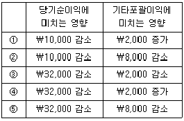
- ①
- ②
- ③
- ④
- ⑤
(정답률: 알수없음)
44. 다음은 (주)감평의 20x1년도 재고자산 거래와 관련된 자료이다.
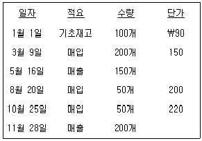
다음 설명 중 옳지 않은 것은?
- 실지재고조사법을 적용하여 선입선출법을 사용할 경우 기말재고자산 금액은 ￦11,000이다.
- 실지재고조사법을 적용하여 가중평균법을 사용할 경우 매출원가는 ￦52,500이다.
- 선입선출법을 사용할 경우보다 가중평균법을 사용할 때 당기순이익이 더 작다.
- 가중평균법을 사용할 경우, 실지재고조사법을 적용하였을 때보다 계속기록법을 적용하였을 때 당기순이익이 더 크다.
- 선입선출법을 사용할 경우, 계속기록법을 적용하였을 때보다 실지재고조사법을 적용하였을 때 매출원가가 더 크다.
(정답률: 알수없음)
45. (주)감평은 20x1년 초 ￦100,000인 건물(내용연수 10년, 잔존가치 ￦0, 정액법 상각)을 취득하였다. (주)감평은 동 건물에 대하여 재평가모형을 적용하며, 20x1년 말과 20x2년 말 현재 건물의 공정가치는 각각 ￦99,000과 ￦75,000이다. 동 건물 관련 회계처리가 (주)감평의 20x2년도 당기순이익에 미치는 영향은? (단, 건물을 사용함에 따라 재평가잉여금의 일부를 이익잉여금으로 대체하지 않는다.)
- ￦11,000 감소
- ￦15,000 감소
- ￦20,000 감소
- ￦24,000 감소
- ￦29,000 감소
(정답률: 알수없음)
46. 재무보고를 위한 개념체계에서 재무제표 요소에 관한 설명으로 옳지 않은 것은?
- 자산이 갖는 미래경제적효익은 대체적인 제조과정의 도입으로 생산원가가 절감되는 경우와 같이 현금유출을 감소시키는 능력일 수도 있다.
- 자산의 존재를 판단하기 위해서 물리적 형태가 필수적인 것은 아니다.
- 경제적 효익에 대한 통제력은 법률적 권리의 결과이므로 법률적 통제가 있어야 자산의 정의를 충족시킬 수 있다.
- 기업은 일반적으로 구매나 생산을 통하여 자산을 획득하지만 다른 거래나 사건도 자산을 창출할 수 있다.
- 보증기간이 명백히 경과한 후에 발생하는 제품하자에 대해서도 수리해 주기로 방침을 정한 경우에 이미 판매된 제품과 관련하여 지출될 것으로 예상되는 금액은 부채이다.
(정답률: 알수없음)
47. (주)감평은 20x1년 초 공장건물을 신축하기 시작하여 20x1년 말에 완공하였다. 다음은 공장건물의 신축을 위한 (주)감평의 지출액과 특정차입금 및 일반차입금에 대한 자료이다.
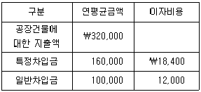
20x1년 공장건물과 관련하여 자본화할 차입원가는? (단, 이자비용은 20x1년 중에 발생한 금액이며, 공장건물은 차입원가를 자본화하는 적격자산에 해당된다.)
- ￦12,000
- ￦18,400
- ￦30,400
- ￦31,200
- ￦37,600
(정답률: 알수없음)
48. (주)감평은 20x8년 3월 1일 사용중이던 기계장치를 (주)대한의 신형 기계장치와 교환하면서 ￦4,000의 현금을 추가로 지급하였다. (주)감평이 사용하던 기계장치는 20x5년에 ￦41,000에 취득한 것으로 교환당시 감가상각누계액은 ￦23,000이고 공정가치는 ￦21,000이다. 한편, 교환시점 (주)대한의 신형 기계장치의 공정가치는 ￦26,000이다. 동 교환거래가 상업적 실질이 있으며 (주)감평의 사용중이던 기계장치의 공정가치가 더 명백한 경우 (주)감평이 교환거래로 인해 인식할 처분손익은?
- 이익 ￦3,000
- 이익 ￦4,000
- 손실 ￦3,000
- 손실 ￦4,000
- 이익 ￦1,000
(정답률: 알수없음)
49. (주)감평은 본사 사옥을 신축하기 위하여 토지를 취득하였는데 이 토지에는 철거예정인 창고가 있었다. 다음 자료를 고려할 때, 토지의 취득원가는?
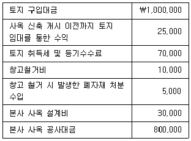
- ￦1,⑤0,000
- ￦1,075,000
- ￦1,080,000
- ￦1,100,000
- ￦1,1⑤,000
(정답률: 알수없음)
50. 다음 설명 중 옳은 것을 모두 고른 것은?
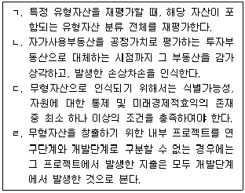
- ㄱ, ㄴ
- ㄱ, ㄷ
- ㄴ, ㄹ
- ㄷ, ㄹ
- ㄱ, ㄴ, ㄷ
(정답률: 알수없음)
51. (주)감평은 20x1년 1월 1일 (주)한국이 동 일자에 발행한 액면금액 ￦1,000,000, 표시이자율 연 10%(이자는 매년 말 지급)의 3년 만기의 사채를 ￦951,963에 취득하였다. 동 사채의 취득시 유효이자율은 연 12%이었으며, (주)감평은 동 사채를 상각후원가로 측정하는 금융자산으로 분류하였다. 동사채의 20x1년 12월 31일 공정가치는 ￦975,123이었으며, (주)감평은 20x2년 7월 31일에 경과이자를 포함하여 ￦980,000에 전부 처분하였다. 동 사채 관련 회계처리가 (주)감평의 20x2년도 당기순이익에 미치는 영향은? (단, 단수차이로 인한 오차가 있으면 가장 근사치를 선택한다.)
- ￦13,801 증가
- ￦14,842 감소
- ￦4,877 증가
- ￦34,508 감소
- ￦48,310 증가
(정답률: 알수없음)
52. 다음은 (주)감평이 채택하고 있는 확정급여제도와 관련한 자료이다.
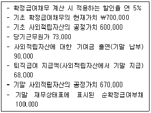
(주)감평의 확정급여제도 적용이 포괄손익계산서의 당기순이익과 기타포괄이익에 미치는 영향은 각각 얼마인가?
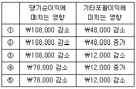
- ①
- ②
- ③
- ④
- ⑤
(정답률: 알수없음)
53. (주)감평은 20x1년 1월 1일 다음과 같은 조건의 전환사채(만기 3년)를 액면발행하였다. 20x3년 1월 1일에 액면금액의 40%에 해당하는 전환사채가 보통주로 전환될 때 인식되는 주식발행초과금은? (단, 전환권대가는 전환시 주식발행초과금으로 대체되며, 단수차이로 인한 오차가 있으면 가장 근사치를 선택한다.)
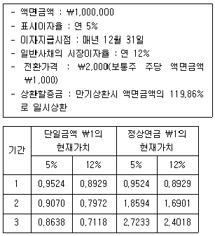
- ￦166,499
- ￦177,198
- ￦245,939
- ￦256,638
- ￦326,747
(정답률: 알수없음)
54. 다음은 (주)감평의 20x1년도 현금흐름표를 작성하기 위한 자료이다.
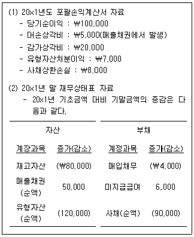
(주)감평의 20x1년도 영업활동순현금흐름은?
- ￦89,000
- ￦153,000
- ￦158,000
- ￦160,000
- ￦161,000
(정답률: 알수없음)
55. (주)감평의 20x1년도 희석주당이익은? (단, 전환우선주 전환 이외의 보통주식수의 변동은 없으며, 유통보통주식수 계산시 월할계산한다. 또한 계산결과는 가장 근사치를 선택한다.)
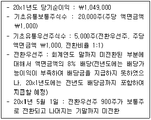
- ￦30
- ￦32
- ￦35
- ￦37
- ￦42
(정답률: 알수없음)
56. (주)감평은 20x1년 초 (주)대한을 합병하면서 이전대가로 현금 ￦1,500,000과 (주)감평이 보유한 토지(장부금액 ￦200,000, 공정가치 ￦150,000)를 (주)대한의 주주에게 지급하였다. 합병일 현재 (주)대한의 식별가능한 자산의 공정가치는 ￦3,000,000, 부채의 공정가치는 ￦1,500,000이며, 주석으로 공시한 우발부채는 현재의무이며 신뢰성 있는 공정가치는 ￦100,000이다. 합병시 (주)감평이 인식할 영업권은?
- ￦150,000
- ￦200,000
- ￦250,000
- ￦350,000
- ￦400,000
(정답률: 알수없음)
57. (주)감평은 20x1년 초에 부여일로부터 3년의 지속적인 용역제공을 조건으로 직원 100명에게 주식선택권을 1인당 10개씩 부여하였다. 20x1년 초 주식선택권의 단위당 공정가치는 ￦150이며, 주식선택권은 20x4년 초부터 행사할 수 있다. (주)감평의 연도별 실제 퇴직자 수 및 추가퇴직 예상자 수는 다음과 같다.
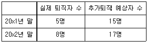
(주)감평은 20x1년 말에 주식선택권의 행사가격을 높이는 조건변경을 하였으며, 이러한 조건변경으로 주식선택권의 단위당 공정가치가 ￦30 감소하였다. 20x2년도 인식할 보상비용은?
- ￦16,000
- ￦30,000
- ￦40,000
- ￦56,000
- ￦70,000
(정답률: 알수없음)
58. 충당부채, 우발부채 및 우발자산에 관한 설명으로 옳지 않은 것은?
- 충당부채는 현재의무이고 이를 이행하기 위하여 경제적 효익이 있는 자원을 유출할 가능성이 높고 해당 금액을 신뢰성 있게 추정할 수 있으므로 부채로 인식한다.
- 제품보증이나 이와 비슷한 계약 등 비슷한 의무가 다수 있는 경우에 의무 이행에 필요한 자원의 유출 가능성은 해당 의무 전체를 고려하여 판단한다.
- 재무제표는 미래 시점의 예상 재무상태가 아니라 보고기간 말의 재무상태를 표시하는 것이므로, 미래 영업에서 생길 원가는 충당부채로 인식한다.
- 손실부담계약은 계약상 의무의 이행에 필요한 회피 불가능 원가가 그 계약에서 받을 것으로 예상되는 경제적 효익을 초과하는 계약을 말한다.
- 우발자산은 과거사건으로 생겼으나, 기업이 전적으로 통제할 수는 없는 하나 이상의 불확실한 미래 사건의 발생 여부로만 그 존재 유무를 확인할 수 있는 잠재적 자산을 말한다.
(정답률: 알수없음)
59. (주)감평은 20x1년 초 업무용 건물을 ￦2,000,000에 취득하였다. 구입당시에 동 건물의 내용연수는 5년이고 잔존가치는 ￦200,000으로 추정되었다. (주)감평은 감가상각방법으로서 연수합계법을 사용하여 왔으나 20x3년 초에 정액법으로 변경하고, 동일 시점에 잔존가치를 ￦20,000으로 변경하였다. 20x3년도 포괄손익계산서 상 감가상각비는?
- ￦144,000
- ￦300,000
- ￦360,000
- ￦396,000
- ￦400,000
(정답률: 알수없음)
60. 다음은 20x1년 초 설립한 (주)감평의 20x1년도 법인세와 관련된 내용이다.
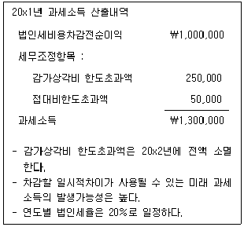
20x1년도에 인식할 법인세비용은?
- ￦200,000
- ￦210,000
- ￦260,000
- ￦310,000
- ￦320,000
(정답률: 알수없음)
61. (주)감평의 20x1년 초 유통보통주식수는 1,000주(주당 액면금액 ￦1,000), 유통우선주식수는 200주(주당 액면금액 ￦1,000)이다. 20x1년 9월 1일에 (주)감평은 보통주1,000주의 유상증자를 실시하였는데, 발행금액은 주당 ￦1,200이고 유상증자 직전주당 공정가치는 ￦2,000이다. 20x1년도 당기순이익은 ￦280,000이며, 우선주(비누적적, 비참가적)의 배당률은 5%이다. 20x1년도 기본주당이익은? (단, 유상증자대금은 20x1년 9월 1일 전액 납입완료 되었으며, 유통보통주식수 계산시 월할계산한다.)
- ￦135
- ￦140
- ￦168.75
- ￦180
- ￦202.5
(정답률: 알수없음)
62. (주)감평은 20x1년 1월 1일에 액면금액 ￦1,000,000(표시이자율 연 8%, 매년 말 이자지급, 만기 3년)의 사채를 발행하였다. 발행당시 시장이자율은 연 13%이다. 20x1년 12월 31일 현재 동 사채의 장부금액은 ￦916,594이다. 동 사채와 관련하여 (주)감평이 20x3년도 인식할 이자비용은? (단, 단수차이로 인한 오차가 있으면 가장 근사치를 선택한다.)
- ￦103,116
- ￦107,026
- ￦119,157
- ￦124,248
- ￦132,245
(정답률: 알수없음)
63. (주)감평은 20x1년 초 투자 목적으로 건물을 ￦2,000,000에 취득하여 공정가치 모형을 적용하였다. 건물의 공정가치 변동이 다음과 같을 떄, (주)감평의 20x2년도 당기순이익에 미치는 영향은? (단, 필요할 경우 건물에 대해 내용연수 8년, 잔존가치 ￦0, 정액법으로 감가상각 한다.)
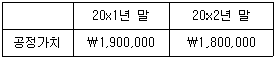
- 영향 없음
- ￦100,000 감소
- ￦200,000 감소
- ￦350,000 감소
- ￦450,000 감소
(정답률: 알수없음)
64. (주)감평은 20x7년 초 기계장치를 ￦5,000(내용연수 5년, 잔존가치 ￦0, 정액법 상각)에 취득하였다. 20x7년 말과 20x8년 말 기계장치에 대한 공정가치는 각각 ￦7,000과 ￦5,000이다. (주)감평은 동 기계장치에 대해 공정가치로 재평가하고 있으며, 기계장치를 사용함에 따라 재평가잉여금 중 실현된 부분을 이익잉여금으로 직접 대체하는 정책을 채택하고 있다. 20x8년에 재평가잉여금 중 이익잉여금으로 대체되는 금액은?
- ￦500
- ￦750
- ￦1,500
- ￦1,750
- ￦2,500
(정답률: 알수없음)
65. 생물자산에 관한 설명으로 옳지 않은 것은?
- 생물자산의 순공정가치를 산정할 때에 추정 매각부대원가를 차감하기 때문에 생물자산의 최초 인식시점에 손실이 발생할 수 있다.
- 수확시점의 수확물은 어떠한 경우에도 순공정가치로 측정한다.
- 최초 인식후 생물자산의 순공정가치 변동으로 발생하는 평가손익은 발생한 기간의 당기손익에 반영한다.
- 순공정가치로 측정하는 생물자산과 관련된 정부보조금에 다른 조건이 없는 경우에는 이를 수취할 수 있게 되는 시점에 기타포괄손익으로 인식한다.
- 생물자산을 최초로 인식하는 시점에 시장 공시가격을 구할 수 없고, 대체적인 공정가치측정치가 명백히 신뢰성 없게 결정되는 경우에는 원가에서 감가상각누계액과 손상차손누계액을 차감한 금액으로 측정한다.
(정답률: 알수없음)
66. (주)감평은 선입선출법에 의한 저가기준을 적용하여 소매재고법으로 재고자산을 평가하고 있다. 20x8년도 상품재고 거래와 관련된 자료가 다음과 같은 경우 (주)감평의 20x8년도 매출원가는?
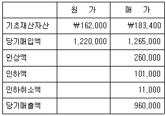
- ￦526,720
- ￦532,600
- ￦849,390
- ￦855,280
- ￦952,400
(정답률: 알수없음)
67. 재고자산에 관한 설명으로 옳지 않은 것은?
- 재료원가, 노무원가 및 기타 제조원가 중 비정상적으로 낭비된 부분은 재고자산의 취득원가에 포함시키지 않고 발생기간의 비용으로 인식한다.
- 제작기간이 단기간인 재고자산은 차입원가를 자본화 할 수 있는 적격자산에 해당되지 아니한다.
- 매입거래처로부터 매입수량이나 매입금액의 일정률만큼 리베이트를 수령할 경우 이를 수익으로 인식하지 않고 재고자산 매입원가에서 차감한다.
- 기말 재고자산은 취득원가와 순실현가능가치 중 낮은 금액으로 측정한다.
- 가격변동이익이나 중개이익을 목적으로 옥수수, 구리, 석유 등의 상품을 취득하여 단기간 내에 매도하는 기업은 순공정가치의 변동을 기타포괄손익으로 인식한다.
(정답률: 알수없음)
68. (주)감평은 20x3년도부터 재고자산 평가방법을 선입선출법에서 가중평균법으로 변경하였다. 이러한 회계정책의 변경은 한국채택국제회계기준에서 제시하는 조건을 충족하며, (주)감평은 이러한 변경에 대한 소급효과를 모두 결정할 수 있다. 다음은 (주)감평의 재고자산 평가방법별 기말재고와 선입선출법에 의한 당기순이익이다.
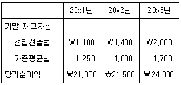
회계변경 후 20x3년도 당기순이익은? (단, 20x3년도 장부는 마감 전이다.)
- ￦23,500
- ￦23,700
- ￦24,000
- ￦24,300
- ￦24,500
(정답률: 알수없음)
69. (주)감평은 20x3년 초 건물을 ￦41,500에 취득(내용연수 10년, 잔존가치 ￦1,500, 정액법 상각)하여 사용하고 있으며, 20x5년 중 손상이 발생하여 20x5년 말 회수가능액은 ￦22,500으로 추정되었다. 20x6년 말 건물의 회수가능액은 ￦26,000인 것으로 추정되었다. 동 건물에 대해 원가모형을 적용하는 경우 다음 설명 중 옳지 않은 것은?
- 20x5년 말 손상을 인식하기 전의 건물의 장부금액은 ￦29,500이다.
- 20x5년 건물의 손상차손은 ￦7,000이다.
- 20x6년 건물의 감가상각비는 ￦3,000이다.
- 20x6년 말 손상이 회복된 이후 건물의 장부금액은 ￦25,500이다.
- 20x6년 건물의 손상차손환입액은 ￦6,500이다.
(정답률: 알수없음)
70. (주)감평은 20x1년 초에 하수처리장치를 ￦20,000,000에 구입하여 즉시 가동하였으며, 하수처리장치의 내용연수는 3년이고 잔존가치는 없으며 정액법으로 감가상각 한다. 하수처리장치는 내용연수 종료 직후 주변 환경을 원상회복하는 조건으로 허가받아 취득한 것이며, 내용연수 종료시점의 원상회복비용은 ￦1,000,000으로 추정된다. (주)감평의 내재이자율 및 복구충당부채의 할인율이 연 8%일 때, 20x1년도 감가상각비는? (단, 계산결과는 가장 근사치를 선택한다.)
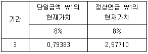
- ￦6,666,666
- ￦6,931,277
- ￦7,000,000
- ￦7,460,497
- ￦7,525,700
(정답률: 알수없음)
71. 제조기업인 (주)감평이 변동원가계산방법에 의하여 제품원가를 계산할 때 제품원가에 포함되는 항목을 모두 고른 것은?
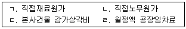
- ㄱ, ㄴ
- ㄱ, ㄹ
- ㄴ, ㄷ
- ㄴ, ㄹ
- ㄱ, ㄷ, ㄹ
(정답률: 알수없음)
72. 원가가산 가격결정방법에 의해서 판매가격을 결정하는 경우 ( )에 들어갈 금액으로 옳은 것은? (단, 영업이익은 총원가의 30%이고, 판매비와관리비는 제조원가의 50%이다.)
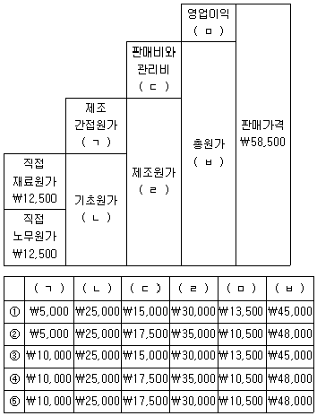
- ①
- ②
- ③
- ④
- ⑤
(정답률: 알수없음)
73. 실제개별원가계산제도를 사용하는 (주)감평의 20x1년도 연간 실제 원가는 다음과 같다.
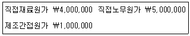
(주)감평은 20x1년 중 작업지시서 #901을 수행하였는데 이 작업에 320시간의 직접노무시간이 투입되었다. (주)감평은 제조간접원가를 직접노무시간을 기준으로 실제배부율을 사용하여 각 작업에 배부한다. 20x1년도 실제 총직접노무시간은 2,500시간이다. (주)감평이 작업지시서 #901에 배부하여야 할 제조간접원가는?
- ￦98,000
- ￦109,000
- ￦128,000
- ￦160,000
- ￦175,000
(정답률: 알수없음)
74. (주)감평은 수선부문과 동력부문의 두 개의 보조부문과 도색부문과 조립부문의 두 개의 제조부문으로 구성되어 있다. (주)감평은 상호배부법을 사용하여 보조부문의 원가를 제조부문에 배부한다. 20x1년도 보조부문의 용역제공은 다음과 같다.
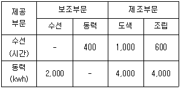
20x1년도 보조부문인 수선부문과 동력부문으로부터 도색부문에 배부된 금액은 ￦100,000이고, 조립부문에 배부된 금액은 ￦80,000이었다. 동력부문의 배부 전 원가는?
- ￦75,000
- ￦80,000
- ￦100,000
- ￦1⑤,000
- ￦125,000
(정답률: 알수없음)
75. 다음은 (주)감평의 20x1년도 매출관련 자료이다.
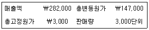
20x2년도에 광고비 ￦10,000을 추가로 지출한다면, 판매량이 300단위 증가할 확률이 60%이고, 200단위 증가할 확률이 40%로 될 것으로 예상된다. 이 때 증가될 것으로 기대되는 이익은? (단, 20x2년도 단위당 판매가격, 단위당 변동원가, 광고비를 제외한 총고정원가는 20x1년도와 동일하다고 가정한다.)
- ￦700
- ￦800
- ￦1,200
- ￦1,700
- ￦2,700
(정답률: 알수없음)
76. 정상원가계산을 사용하는 (주)감평은 단일제품을 제조ㆍ판매하는 기업이다. 20x1년도의 고정제조간접원가 총예산액 및 실제 발생액은 ￦720,000이었다. 20x1년 제품의 생산 및 판매량은 다음과 같고, 기초 및 기말 재공품은 없다.
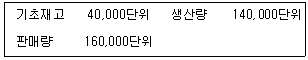
고정제조간접원가배부율은 120,000단위를 기준으로 산정하며, 이 배부율은 매년 동일하게 적용된다. 한편, 제조원가의 원가차이는 전액 매출원가에서 조정한다. 변동원가계산에 의한 영업이익이 ￦800,000인 경우, 전부원가계산에 의한 영업이익은?
- ￦680,000
- ￦700,000
- ￦750,000
- ￦830,000
- ￦920,000
(정답률: 알수없음)
77. 다음은 활동기준원가계산을 사용하는 제조기업인 (주)감평의 20x1년도 연간활동원가 예산자료이다. 20x1년에 회사는 제품 A를 1,000단위 생산하였는데 제품 A의 생산을 위한 활동원가는 ￦830,000으로 집계되었다. 제품 A의 생산을 위해서 20x1년에 80회의 재료이동과 300시간의 직접노동시간이 소요되었다. (주)감평이 제품 A를 생산하는 과정에서 발생한 기계작업시간은?
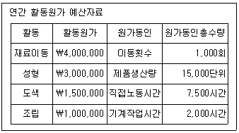
- 400시간
- 500시간
- 600시간
- 700시간
- 800시간
(정답률: 알수없음)
78. (주)감평은 세 종류의 제품 A, B, C를 독점 생산 및 판매하고 있다. 제품생산을 위해 사용되는 공통설비의 연간 사용시간은 총 40,000시간으로 제한되어 있다. 20x1년도 예상 자료는 다음과 같다. 다음 설명 중 옳은 것은?
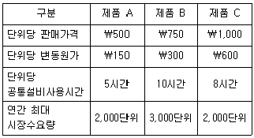
- 제품단위당 공헌이익이 가장 작은 제품은 C이다.
- 공헌이익을 최대화하기 위해 생산할 제품 C의 설비 사용시간은 12,000시간이다.
- 공헌이익을 최대화하기 위해 생산할 총제품수량은 5,000단위이다.
- 공헌이익을 최대화하기 위해서는 제품 C, 제품 B, 제품 A의 순서로 생산한 후 판매해야 한다.
- 획득할 수 있는 최대공헌이익은 ￦2,130,000이다.
(정답률: 알수없음)
79. (주)감평은 종합원가계산제도를 채택하고 단일제품을 생산하고 있다. 재료는 공정이 시작되는 시점에서 전량 투입되며, 가공(전환)원가는 공정 전체에 걸쳐 균등하게 발생한다. 가중평균법과 선입선출법에 의한 가공(전환)원가의 완성품환산량은 각각 108,000단위와 87,000단위이다. 기초재공품의 수량이 70,000단위라면 기초재공품 가공(전환)원가의 완성도는?
- 10%
- 15%
- 20%
- 25%
- 30%
(정답률: 알수없음)
80. 다음 자료를 이용하여 계산한 매출원가는?
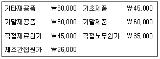
- ￦121,000
- ￦126,000
- ￦131,000
- ￦136,000
- ￦141,000
(정답률: 알수없음)